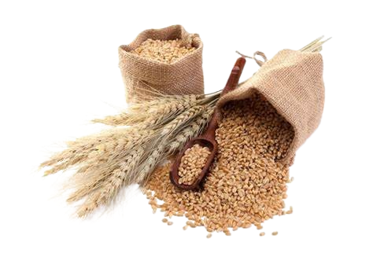
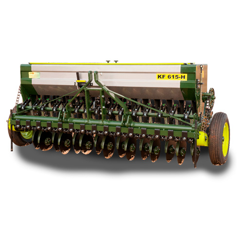

TRIGO
A produção de trigo é uma atividade agrícola fundamental em muitas regiões do mundo. O trigo é uma gramínea amplamente cultivada por causa de seu alto valor nutritivo e versatilidade na culinária. A produção envolve várias etapas, desde o preparo do solo até a colheita e o processamento. Fatores como clima, solo adequado, técnicas de cultivo e controle de pragas são essenciais para garantir uma boa safra. Países como Estados Unidos, China, Índia, Rússia e França estão entre os maiores produtores de trigo globalmente

Trigo possui ciclos fenológico que podem ser divididos em:
6 fases
• Germinação e Emergência;
Inicia com a absorção de água pela semente e a emergência da plântula através do solo.
• Desenvolvimento Vegetativo;
A planta desenvolve folhas e raízes, aumentando sua biomassa. Durante esta fase, a planta forma o perfilhamento, que são os colmos laterais que se desenvolvem a partir do colmo principal.
• Elongação do Colmo;
A planta aumenta de altura rapidamente, crescendo o caule e formando o embrião da espiga
• Floração;
A planta forma a espiga e desenvolve as flores, que são fertilizadas para formar grãos.
• Floração;
A planta forma a espiga e desenvolve as flores, que são fertilizadas para formar grãos
• Formação do Grão;
Inicia-se após a fertilização das flores, onde o grão se desenvolve e amadurece
• Maturação;
Os grãos amadurecem completamente, ocorre a secagem e a planta se prepara para a colheita.
Clima
O clima desempenha um papel crucial na produção de trigo, influenciando diretamente seu crescimento, desenvolvimento e qualidade dos grãos. Aqui estão alguns aspectos importantes sobre o clima na produção de trigo:
O trigo cresce melhor em climas temperados, com temperaturas ideais para o crescimento vegetativo variando entre 15°C e 25°C. Temperaturas muito altas durante a floração e maturação podem reduzir o rendimento e a qualidade dos grãos.
A quantidade e distribuição da precipitação são críticas. O trigo requer água suficiente para germinação, crescimento vegetativo e desenvolvimento dos grãos. A falta de água durante períodos-chave, como a floração, pode reduzir significativamente o rendimento.
A luz solar é essencial para a fotossíntese e o crescimento das plantas de trigo. Climas com alta luminosidade durante o período de crescimento promovem o desenvolvimento adequado da planta e a formação de grãos.
A Umidade excessiva pode aumentar o risco de doenças fúngicas, enquanto baixa umidade relativa pode afetar a floração e o enchimento dos grãos.
O trigo é uma planta de dia curto, ou seja, seu crescimento e desenvolvimento são influenciados pela duração do dia. Isso afeta o tempo de floração e maturação das plantas.
O trigo é sensível a geadas tardias, especialmente durante a fase de emborrachamento e floração. Geadas podem danificar as flores em desenvolvimento e reduzir o rendimento da cultura.
Os agricultores devem adaptar as práticas de manejo conforme as condições climáticas locais para otimizar o crescimento e a produção de trigo. Tecnologias como previsão meteorológica e sistemas de irrigação ajudam a mitigar os impactos adversos do clima na produção agrícola.
Escolha da área
A escolha da área para a produção de trigo é uma decisão estratégica importante para os agricultores, influenciada por vários fatores que afetam diretamente o rendimento e a qualidade da safra. Aqui estão alguns dos principais aspectos considerados na escolha da área para cultivar trigo:
O clima é um dos fatores mais críticos. O trigo geralmente se desenvolve melhor em climas temperados, com temperaturas adequadas durante o ciclo de crescimento e uma quantidade suficiente e bem distribuída de chuvas. A escolha de áreas com histórico climático favorável pode reduzir os riscos associados a eventos climáticos adversos, como secas, geadas tardias ou excesso de chuvas.
O tipo de solo influencia diretamente o crescimento das plantas de trigo. Solos profundos, bem drenados e ricos em nutrientes são ideais para promover um bom desenvolvimento radicular e uma absorção eficiente de água e nutrientes. A escolha de áreas com solos adequados também pode minimizar problemas como compactação do solo ou deficiências nutricionais.
A topografia da área cultivada pode afetar aspectos como a drenagem do solo e a exposição ao vento. Áreas planas ou suavemente inclinadas são preferíveis para facilitar o manejo agrícola, enquanto áreas muito íngremes podem ser mais difíceis de cultivar e manejar.
A disponibilidade de água é crucial para o crescimento e desenvolvimento das plantas de trigo. A escolha de áreas com acesso a fontes de água adequadas, seja através de chuvas regulares, irrigação eficiente ou lençóis freáticos, é essencial para garantir uma produção consistente e de qualidade.
Aspectos como acesso a estradas, proximidade de centros de distribuição e infraestrutura de armazenamento também influenciam na escolha da área para cultivo de trigo. Uma boa infraestrutura facilita o transporte da colheita, reduz os custos logísticos e permite um manejo mais eficiente da produção.
Considerar os riscos climáticos locais, como inundações, tornados ou problemas específicos da região, é essencial para mitigar potenciais perdas na produção. A avaliação de riscos e a adoção de práticas de manejo adequadas podem ajudar os agricultores a minimizar esses impactos adversos.
Preparação e adubação do solo
A preparação e adubação do solo são etapas cruciais na produção de trigo, pois influenciam diretamente no crescimento das plantas, no desenvolvimento dos grãos e no rendimento da safra. Aqui estão os principais aspectos envolvidos nesses processos:
O solo deve ser adequadamente preparado antes do plantio do trigo. Isso inclui a remoção de restos de culturas anteriores, controle de plantas daninhas e, em alguns casos, o uso de arados ou grades para melhorar a estrutura do solo.
O nivelamento do solo ajuda a garantir uma distribuição uniforme de água e nutrientes. Evitar a compactação do solo durante o preparo é essencial para promover um bom desenvolvimento radicular das plantas de trigo.
A calagem pode ser necessária para ajustar o pH do solo para um intervalo ideal para o trigo, geralmente entre 5,5 e 7,0. Um pH inadequado pode limitar a disponibilidade de nutrientes essenciais para as plantas.
Antes da adubação, é fundamental realizar uma análise de solo para determinar os níveis de nutrientes presentes e suas necessidades específicas para o trigo. Isso ajuda a planejar uma adubação adequada e eficiente.
O nitrogênio é essencial para o crescimento vegetativo inicial do trigo e para o desenvolvimento das espigas. Geralmente, uma parte significativa do nitrogênio é aplicada no início do ciclo de crescimento, e doses adicionais podem ser necessárias durante a fase de perfilhamento.
O fósforo é crucial para o estabelecimento inicial das raízes e o desenvolvimento dos grãos, enquanto o potássio é importante para a resistência a doenças e a qualidade dos grãos. Ambos os nutrientes devem ser aplicados de acordo com as recomendações da análise de solo.
A adubação com micronutrientes como zinco, ferro, manganês e boro pode ser necessária em solos deficientes para garantir um crescimento saudável das plantas
Plantio
A época ideal varia conforme a região, mas geralmente ocorre no outono para climas temperados. Isso permite que o trigo cresça durante o inverno e amadureça na primavera.
Escolher sementes de trigo de boa qualidade é crucial. As variedades são selecionadas com base no clima local, resistência a doenças e características de crescimento.
O trigo pode ser plantado manualmente ou usando máquinas semeadoras, que distribuem as sementes de maneira uniforme e controlada.
As sementes são geralmente plantadas em fileiras espaçadas para permitir o crescimento adequado das plantas. A profundidade de plantio varia, mas geralmente é de alguns centímetros.
Após o plantio, pode ser necessário irrigação, controle de ervas daninhas e aplicação de fertilizantes, dependendo das condições locais e das práticas agrícolas.
O trigo passa por várias fases de desenvolvimento, incluindo germinação, desenvolvimento vegetativo e formação de grãos.
A colheita ocorre geralmente no verão, quando os grãos estão maduros. Equipamentos como colheitadeiras são usados para colher o trigo de maneira eficiente.
Após a colheita, o trigo pode ser armazenado em silos para protegê-lo contra umidade e pragas até ser vendido ou processado.
Controle de pragas e doenças
• Monitoramento regular: Inspeção das lavouras para detectar pragas e doenças precocemente.
• Uso de variedades resistentes: Seleção de cultivares que apresentam resistência genética às principais doenças da região.
• Rotação de culturas: Reduz o acúmulo de patógenos no solo e diminui a incidência de pragas específicas.
• Controle cultural: Práticas como manejo adequado de irrigação e adubação para fortalecer as plantas e reduzir o estresse.
• Controle químico: Aplicação criteriosa de inseticidas e fungicidas quando necessário, seguindo as recomendações técnicas e respeitando os períodos de carência.
O sucesso no controle de pragas e doenças depende da integração dessas estratégias e da adaptação às condições específicas de cada área de cultivo de trigo. Agricultores geralmente trabalham com agrônomos para desenvolver planos de manejo integrado que equilibrem eficácia, sustentabilidade e segurança alimentar.
Controle de pragas e doenças
Monitoramento regular: Inspeção das lavouras para detectar pragas e doenças precocemente.
Uso de variedades resistentes: Seleção de cultivares que apresentam resistência genética às principais doenças da região.
Rotação de culturas: Reduz o acúmulo de patógenos no solo e diminui a incidência de pragas específicas.
Controle cultural: Práticas como manejo adequado de irrigação e adubação para fortalecer as plantas e reduzir o estresse.
Controle químico: Aplicação criteriosa de inseticidas e fungicidas quando necessário, seguindo as recomendações técnicas e respeitando os períodos de carência.
O sucesso no controle de pragas e doenças depende da integração dessas estratégias e da adaptação às condições específicas de cada área de cultivo de trigo. Agricultores geralmente trabalham com agrônomos para desenvolver planos de manejo integrado que equilibrem eficácia, sustentabilidade e segurança alimentar
Tecnologia
A produção de trigo tem se beneficiado significativamente do avanço das tecnologias agrícolas, contribuindo para aumentar a eficiência, reduzir custos e melhorar a sustentabilidade.
Na produção do trigo, várias máquinas desempenham papéis importantes para garantir eficiência e produtividade. Você pode comprar máquinas para auxiliar na produção do trigo em:
Eventos especializados frequentemente exibem as últimas tecnologias agrícolas, incluindo aquelas voltadas para a produção de trigo.
Fabricantes e fornecedores de equipamentos agrícolas podem oferecer uma ampla gama de tecnologias, desde maquinário até insumos específicos para o cultivo de trigo.
Universidades e centros de pesquisa frequentemente desenvolvem e testam novas tecnologias agrícolas. Entrar em contato com eles pode fornecer informações sobre as últimas inovações no cultivo de trigo.
Existem diversas revistas e periódicos especializados que cobrem temas relacionados à agricultura, onde você pode encontrar artigos sobre novas tecnologias e práticas agrícolas para o trigo.
Muitas empresas e organizações realizam eventos online para discutir novas tecnologias e produtos para a agricultura, permitindo acesso a informações atualizadas sem precisar viajar.
Participar de grupos ou seguir páginas relacionadas à agricultura pode proporcionar insights sobre tecnologias emergentes e produtos utilizados na produção de trigo, além de oportunidades para networking com outros profissionais do setor.
Explorar esses recursos ajudará a encontrar tecnologias e produtos que possam ser aplicados eficazmente na produção de trigo, adaptando-se às necessidades específicas do seu contexto agrícola.

Dependendo do modelo pode variar entre R$ 135.000,00/R$ 14.500,00
Sistemas de Informação Geográfica (SIG) e Sensoriamento Remoto:
- Permitem o mapeamento detalhado das áreas de cultivo, auxiliando na gestão de variabilidade do solo e na otimização do uso de insumos como fertilizantes e água.
Máquinas e Implementos Agrícolas Avançados:
- Tratores com GPS e implementos de precisão permitem a aplicação precisa de sementes, fertilizantes e defensivos, melhorando a uniformidade e eficiência do plantio.

Dependendo do modelo pode variar entre R$ 362.000,00/R$ 2.536,46
Sistemas de Irrigação Inteligente:
- Utilização de sensores de umidade no solo e tecnologias de automação para aplicação precisa de água, reduzindo desperdícios e garantindo condições ideais de crescimento.
Dependendo do modelo pode variar entre R$ 7.000,00/R$ 12.000,00 variando entre mais ou menos.
Genética e Melhoramento de Plantas:
- Desenvolvimento de variedades de trigo mais produtivas, resistentes a doenças, com maior teor de nutrientes e adaptadas a diferentes condições climáticas e de solo.